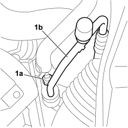
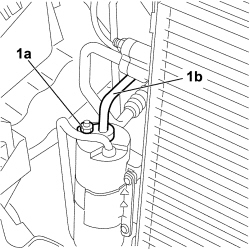

5040A56 LINE FROM DEHYDRATING - R R
- Path
- Procedures > 50 AUXILIARY UNITS > 5040 AIR CONDITIONING CASING AND COMPONENTS > 5040A AIR CONDITIONING REFRIGERANT CIRCUIT > 5040A56 LINE FROM DEHYDRATING - R R
- Kind
- repair procedure (removal / refitting; the operation number is the code)
- Applies to
- all engines; all production periods
- Interactive page
- https://sloeber94.github.io/elrnDB-fCrm/en/#/194000605
Applies to: engines: 1.8; all production periods
 Removing
Removing
 Refitting
Refitting- Turn the ignition key to the OFF position.
- Disconnect the negative battery terminal.
Description | Connector | |
|---|---|---|
- | BATTERY |
Op. 0010T84 COOLANT FOR AIR CONDITIONING SYSTEM - DEHYDRATE AND REPRESSURIZE
Op. 7040D30 ENGINE BAY FRONT BEAM COVER - R R
Op. 1048A32 HOSE FROM AIR FILTER TO INTAKE MANIFOLD - R + R
1. Undo the nut (1a) fixing the connecting pipe (1b) to the drier filter and release it from the housing.

Applies to: engines: 1.8; all production periods
1. Undo the nut (1a) fixing the pipe from the drier filter to the evaporator inlet pipe (1b) and remove the pipe from the vehicle.

Applies to: engines: 1.8; all production periods
Refitting
Removing- Check that the pipe from the drier filter to the evaporator inlet pipe is not damaged and replace all the seals with new parts.
- Position the pipe from the drier filter to the evaporator inlet pipe on the vehicle.
- Fit the pipe from the drier filter to the evaporator inlet pipe on the coupling, screw in the fixing nut and tighten it to the recommended torque.
Component | Fastening | dia | Value (daNm) | Validity |
|---|---|---|---|---|
PIPE FROM DRIER FILTER TO SECTION ON DRIER FILTER | Nut | 1.8 ÷ 2.0 | 1.8 16v |
- Fit the pipe on the coupling for the pipe connected to the drier filter, screw in the fixing nut and tighten to the recommended torque.
Component | Fastening | dia | Value (daNm) | Validity |
|---|---|---|---|---|
PIPE FROM DRIER FILTER TO SECTION ON DRIER FILTER | Nut | 1.8 ÷ 2.0 | 1.8 16v |
Op. 1048A32 HOSE FROM AIR FILTER TO INTAKE MANIFOLD - R + R
Op. 7040D30 ENGINE BAY FRONT BEAM COVER - R R
Op. 0010T84 COOLANT FOR AIR CONDITIONING SYSTEM - DEHYDRATE AND REPRESSURIZE
- Reconnect the negative battery terminal.
Description | Connector | |
|---|---|---|
- | BATTERY |